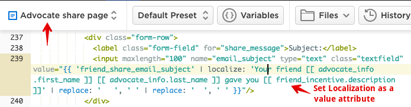
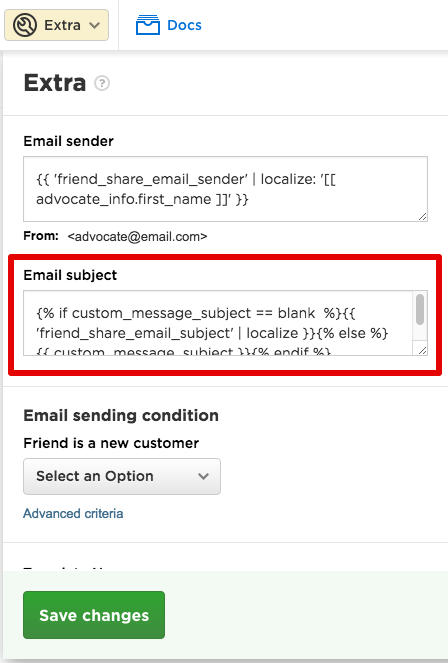
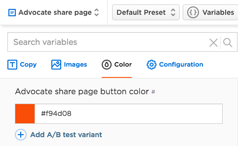
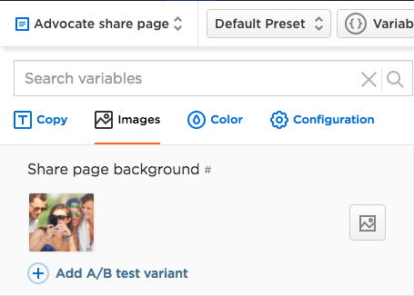
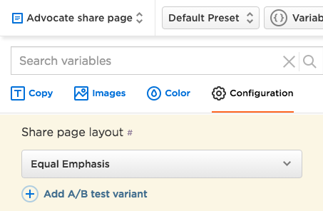

If you don’t know what is Localization inside Talkable read this article.
Few benefits you get out of using Localizations:
- It is extremely easy to set up an AB test if your copy is coded up as a Localization.
- For non-technical people it is easier to change the copy inside Localization Editor because they are afraid to code.
Static copy is basically a piece of text that sits inside HTML & CSS Editor and usually looks like this:
<h1>
Get {{ advocate_incentive.description }}.
</h1>
A piece that we are going to extract into Localizations is just a copy, without HTML tags. To do that, simply wrap the text into a variable notation like so:
<h1>
{{ "advocate_share_page_headline" | localize: "Get [[ advocate_incentive.description ]]." }}
</h1>
Warning
Talkable does not allow coding up Localizations within CSS area. If you want to move some CSS property into localizations use inline <style> tag inside HTML area.
It is highly unlikely that your campaign is not equipped with Subject line as a Localization, by default all newly created campaigns at Talkable already have it. In case your campaign does not please keep reading this section.
Subject line is unique because its default value is set on the Advocate Share Page along with other email sharing fields (email body, reminder checkbox value), not Friend Share email as it might sounded logical. Here is the plan:
- Create Subject Line as a Localization on the Advocate Share Page, provide its default value, it will be used inside value attribute of the “subject” form field:
<input name="email_subject" type="text" class="textfield" value="{{ 'friend_share_email_subject' | localize: 'Your friend [[ advocate_info.first_name ]] [[ advocate_info.last_name ]] gave you [[ friend_incentive.description ]]' | replace: ' ', ' ' | replace: ' ', ' ' }}" />This code creates new Localization named “Friend share email subject” that you are able to change on the Advocate Share Page.
- Navigate to Friend Share email → Extra fields to see Email Subject field:

- Put the following code in there:
{% if custom_message_subject == blank %} {{ 'friend_share_email_subject' | localize }} {% else %} {{ custom_message_subject }} {% endif %}The code snippet above checks if the Advocate provided any Subject at all. If not we take default Subject copy so Friend Share email does not come with a blank subject.
Another example would be localizing font color of a headline, all copy at once, or a background color of a button. You can use color trait of a Localization for that.
- Navigate to HTML & CSS editor of the View you want to add a color Localization on:
- At the very bottom of the HTML area add <style></style> tag with CSS that will override default styling of the element you want to localize:
.button { background-color: {{ "advocate_share_page_button_color" | localize: "#f94d08", trait: "color" }}; border-color: {{ "advocate_share_page_button_color" | localize: "#f94d08", trait: "color" }}; }In the code example above we created new Color Localization with default HEX color #f94d08 which is used for background-color and border-color CSS properties of .button selector. Whenever you set a new color inside Campaign Editor it will be changed across both places because we’re using the same Localization identifier in both places.
- New Color Localization appears under “Color” tab inside Campaign Editor:

Localizing Image asset can be handy if you want to AB test it. Here is how to do that:
- Navigate to HTML & CSS editor of the View you want to add a color Localization on:
- Inside HTML area find an image you want to localize. An image can be either within CSS or within HTML area (<img />, inline styles, etc.). If the image is set within CSS you need to extract it into HTML area using inline styles:
<div class="container" style="background-image: url('{{ "share_page_background" | localize: "share-page-background.jpg", trait: "asset" }}');"> ... </div>In the example above share_page_background is a name of an Image Localization. share-page-background.jpg is a name of an Asset (Files tab within HTML & CSS Editor).
- Now we can see newly created Image Localization under “Images” tab:

In addition to localizing Images, Colors, and static copy Talkable allows you to build really advanced Localizations where you can AB test or switch between different visual layouts of campaign Views.
An example can be to create an AB test for Equal Emphasis (all 3 sharing channels look visually equal) vs. Email Emphasis where email sharing form stands out:
In order to chieve this AB test we need to
- Build two separate layouts using CSS cascades to style all nested children within a container block that holds all the content:
{% assign share_page_layout = "share_page_layout" | localize: "Equal Emphasis", "Email Emphasis" %} <div class="container is-{{ share_page_layout | downcase | split: " " | join: "-" }}"> ... </div>The code above creates a local Liquid variable named share_page_layout and assigns share_page_layout Configuration Localization to it. Then we optimize the variable value to be set as an HTML class attribute (downcase, replace spaces with hyphens) and set it as a part of a class attribute.
- Now inside Campaign Editor we can see newly created Configuration Localization:

- Let’s switch back to HTML & CSS editor and start applying CSS styling to both layouts. Knowing their final classes inside HTML: class=”container is-equal-emphasis” and class=”container is-email-emphasis” we can easily style both layouts inside CSS area like so (SCSS is also allowed and is shown as an example for code simplicity):
.container { &.is-equal-emphasis { h1 { font-size: 48px; } } &.is-email-emphasis { h1 { font-size: 32px; } } }All other nested children can be styled following this pattern.
- Once you’re done with styling it is very easy to set up an AB test, just go back to Campaign Editor and click “Add A/B test variant” link. Once a Campaign goes Live it will start rotating both variants following AB test distribution rules (50:50 by default).
{kind=link}
{kind=link}